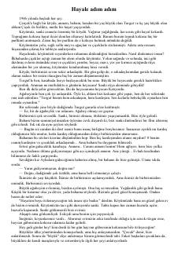

ÇİE'tiqod, oila rishtalari va hayotiy sinovlar haqidagi ta'sirli asar.
Kitob oilaviy muhit, e'tiqod va jamiyatdagi o'zgarishlar haqida hikoya qiladi. Asar bosh qahramonining xotiralari orqali o'tmishdagi hayot, oilaviy rishtalar va inson boshiga tushadigan sinovlarni yoritib beradi.